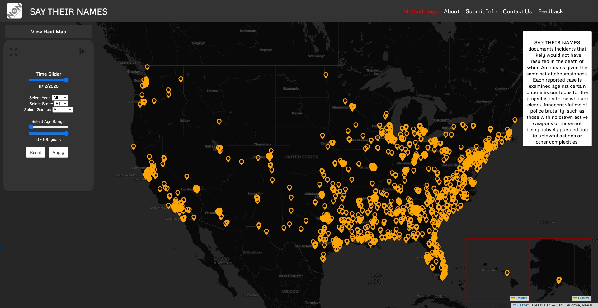
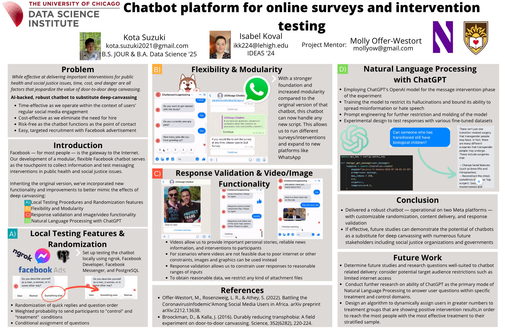
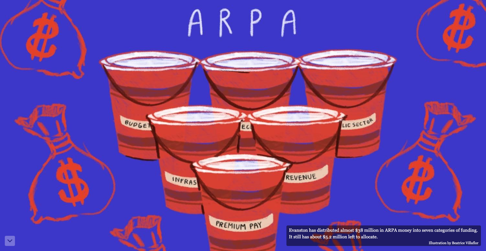
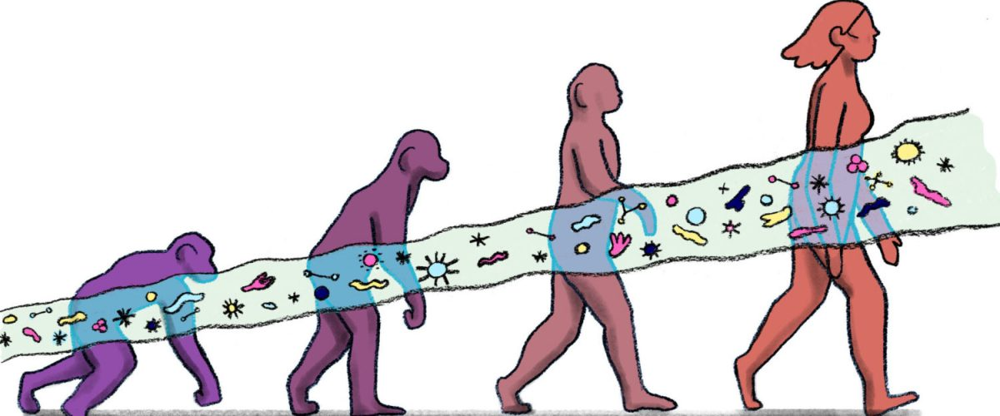

September 1, 2023
Map Development at NON:op
SAY THEIR NAMES
Leading the creation of a commemorative and interactive map that narrates the life stories of Black Americans
who have lost their lives to police violence, utlizing a React app and PostgreSQL database

June 10, 2023
Intervention Chatbot At
Data Science Institute

Building a chatbot for political intervention purposes with features including randomization, video/image features, and OpenAI fucntionality.
September 22, 2022
Tableau At
The Daily Northwestern

Leading Tableau integration of The Daily Northwestern's first-ever interactive dashboard regarding Evanston's ARPA funding.
February 14, 2023
Gut Microbiome
Tree of Life Project

Assisting in the compilation microbial data of over 4,000 samples with a goal to curate a dataset of equal representation of all animal phylogenies, diets, ecologies and geographies.
October 20, 2022
Premier League
Analysis Using R
Producing graphics on the Premier League 2021-22 season for a Northwestern University data science class, analyzing finances, performance, playstyle, etc.